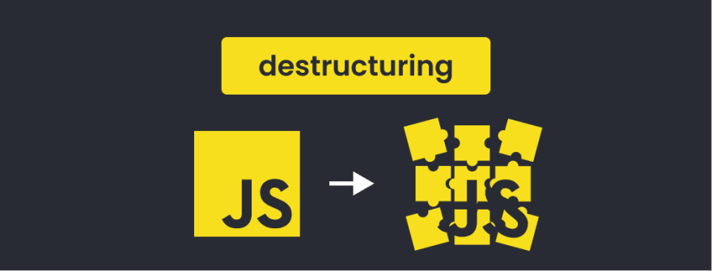

Preguntas TeoricasEs una expresión que te permite extraer o “destructurar” datos desde estructuras de datos como arrays, objetos, y crear nuevas variables con ese dato en particular.
Te permite extraer propiedades de un objeto, items de un array de una manera “sencilla” y de una sola vez.
Pensemos en una estructura de datos común y una tarea repetitiva

Entonces, con la desestructuración de JavaScript podemos capturar una sola de estas propiedades en una nueva variable, fuera del objeto. Para ello, utilizamos cualquiera de las palabras clave de variables, luego encerramos la propiedad en las llaves { } y, finalmente, la igualamos al objeto del que proviene.
Empecemos por las más sencillas, que son las operaciones de desestructuración de arrays. Si queremos extraer datos de arreglos, es bastante simple usando la asignación de desestructuración.
let variableName = [var1, var2, var3];
(let [firstName, secondName] = desestructuración); Extraemos el primer y segundo valor del array variableName en una variable denominada firstName y otra llamada secondName pero como el array tiene más elementos y sólo hemos indicado dos variables (first y second), el resto son descartadas.
let introduccion = ["Hola", "yo" , "soy", "Sara"];
(let [saludo, pronombre] = introduccion);
console.log(saludo);//"Hola"
console.log(pronombre);//"yo"Nota Que las variables son establecidas de izquierda a derecha. De esta manera la primera variable obtiene el valor del primer elemento del array, la segunda variable obtiene el valor del segundo elemento del array, y así sucesivamente.
¿Qué pasa si queremos obtener el primer y el último elemento de nuestro array, en lugar de obtener solo el primer y el segundo elemento
let [saludo,,,nombre] = ["Hola", "yo" ,"soy", "Sara"];
console.log(saludo);//"Hola"
console.log(nombre);//"Sara"De esta manera, la coma hace su magia. Así que si queremos excluir todos los elementos, haríamos esto.
let [,,,,] = ["Hola", "yo" , "soy", "Sara"];¿Qué pasa si queremos asignar algunos valores de un array a una variable y el resto a otra?. En este caso, podríamos hacer esto:
let [saludo,...introduccion] = ["Hola", "yo" , "soy", "Sara"];
console.log(saludo);//"Hola"
console.log(introduccion);//["yo", "soy", "Sara"]Veamos otro ejemplo donde utilizamos la desestructuración. En este caso, haremos un clásico intercambio de variables, donde el valor inicial de a debe estar en b y viceversa. Sin utilizar desestructuración, debemos utilizar una variable auxiliar aux donde guardar uno de los valores temporalmente, mientras hacemos el cambio de variables:
// Sin desestructuración
// let a = 10;
// let b = 5;
// let aux = a;
// a = b;
// b = aux;
// Con desestructuración
let a = 10;
let b = 5;
[a, b] = [b, a];Aprovechando estas características que hemos visto de desestructuración, también podríamos aprovecharlas para reestructurar un array y recrear arrays. Veámoslo con un ejemplo.
Tenemos un array de 2 elementos [3, 4] y queremos aprovecharlo para crear un nuevo array del 1 al 5. Vamos a hacer uso de la desestructuración para reaprovecharlo:
const pair = [3, 4];
// Usando desestructuración + spread
const complete = [1, 2, ...pair, 5]; // [1, 2, 3, 4, 5]
// Sin usar desestructuración
// const complete = [1, 2, pair, 5]; // [1, 2, [3, 4], 5]En este caso, tendríamos que complete es el nuevo array [1, 2, 3, 4, 5] que buscábamos si usamos la desestructuración, pero ten en cuenta que si no utilizaramos el ... previo al pair, conseguiríamos algo muy diferente: [1, 2, [3, 4], 5].
let { var1, var2 } = { var1: …, var2… }Tenemos un objeto existente en el lado derecho, que queremos dividir en variables. El lado izquierdo contiene un patrón para las propiedades correspondientes, en el caso simple eso es una lista de variables entre llaves {...}
Lo que destructuring permite, es hacer este proceso de una manera más directa
let persona = {nombre: "Beatriz", pais: "España", trabajo: "Desarrolladora"};
let nombre = persona.nombre;
let pais = persona.pais;
let trabajo = persona.trabajo;
console.log(nombre);//"Beatriz"
console.log(pais);//"España"
console.log(trabajo);//Desarrolladora"Objetos también pueden ser anidados al desestructurar:
let persona = {
nombre: "Sara",
lugar: {
pais: "Nigeria",
ciudad: "Lagos" },
amigas : ["Annie", "Becky"]
};
let {nombre:otroNombre,
lugar: {
pais : region,
ciudad : x}
} = persona;
console.log(otroNombre);//"Sarah"
console.log(region);//"Nigeria"Este código toma un objeto llamado persona que tiene información sobre una persona llamada "Sara" que vive en Lagos, Nigeria, y tiene amigas llamadas "Annie" y "Becky". Luego, utiliza la "destructuring" para extraer y asignar valores específicos de este objeto a variables nuevas.
Se extrae el nombre de la persona y lo asigna a una variable llamada otroNombre, el país de residencia lo asigna a una variable llamada region, y la ciudad de residencia lo asigna a una variable llamada x.
Finalmente, al imprimir estas variables, se mostrará:
Esta es una forma útil de extraer información específica de un objeto en JavaScript de una manera más concisa.
EJERCICIOSEjercicio 1:
Intercambiar los valores de las variables a y b utilizando
desestructuración
Ejercicio 2:
Crea una variable para el primer elemento de un array y otra
para el resto de elementos.
Ejercicio 3:
Desestructura un objeto en variables con nombres diferentes a
las propiedades del objeto Tu tarea es modificar el objeto
desestructurado de tal manera que al imprimir "ruedas" se muestre el
valor de "coche" y al imprimir "rail" se muestre el valor de
"tren".(Ford, Ave)
Ejercicio 4:
Desestructura un array y un objeto dentro de una función suma
[a, b] y saludo {nombre, edad} respectivamente para usar sus elementos
como argumentos.
Ejercicio 5:
Asigna valores a las variables patas, familia y mueble
utilizando desestructuración de arrays. Para ello, debes seguir los
siguientes pasos:
Ejercicio 6:
Desestructura un objeto anidado y asigna valores hola y mundo, a
las propiedades 'hello' y nombre, y a las variables 'hello' y
'nombre'.
üëç Soluciones :